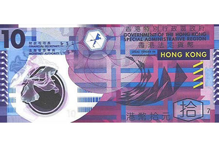
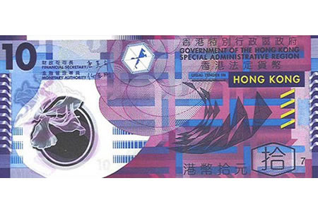

2017年，随项目入驻深圳，海关的那边就是香港。虽然是一个国家，却要先办了签证才能过海关。五一趁劳动节放假，背上行囊，来一个香港三日游。我是从深圳的福田口岸过的海关，这里去香港可以坐港铁直达九龙、香港岛，需要大概40分钟的车程。第一件要做的事不是别的，正是兑换港币。到了地铁站，会有很多兑换点，可以说还是挺方便的。香港消费水平是高于内地一线城市的，所以可以适当多带一点。当然如果不想随身多带现金，到了香港就算使用银联卡也能很方便的从取款机取到钱，而且满大街都是做兑换生意的，只是可能会略贵一点。当然如果有需要也可以在地铁站买八通卡，充值的八通卡几乎可以代替现金。

港币（HKD）是香港的通用货币，在香港一般不直接使用人民币。港币纸币面值有十元、二十元、五十元、一百元、五百元、和一千元，一港元大概等于八九毛人民币吧（2017年）。看着商品标价都是一个个的$符号，但是买起东西来完全不手软，毕竟虽然都是刀，但是跟美刀确实相去甚远。其中，不得不说面值十元的港币确实漂亮，难怪被《金钱的艺术》一书的作者评为世界十大最漂亮纸币之一，不常使用港币的话，存一张以作收藏也是很不错的。
 

02. 联系
联系人：张东 邮箱：568892758@qq.com github仓库：github
网站持续建设中...